شبنم رضاپور
کسی که PDFها را راضی کرد محتوایشان را بیکموکاست لو بدهند.
این جزوه با استفاده از جزوهساز پاپیروس و به صورت خودکار تولید شده است. ممکن است شامل خطا یا برداشت نادرست باشد و نیازمند بررسی و بازبینی مجدد است.
در این مبحث، تولید و تکامل گلبول قرمز از سلول مادر خونساز، شکلگیری و بلوغ رتیکولوسیت، روشهای رنگآمیزی و شمارش آن و کاربرد شمارش رتیکولوسیت در ارزیابی خونسازی بررسی میشود. همچنین تنظیم آهن، شاخص تولید رتیکولوسیت (RPI)، محتوای هموگلوبین رتیکولوسیت و عوامل مؤثر بر جذب آهن مطرح میشوند.
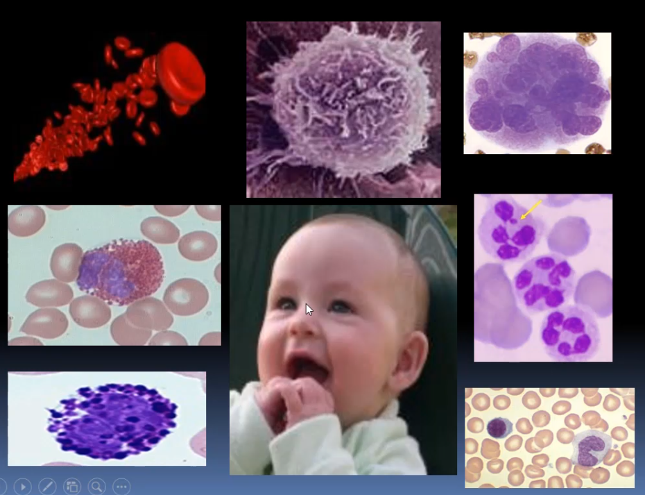
سلول مادر خونساز (hematopoietic stem cell) را سلول بنیادی پلوریپوتنت (pluripotent stem cell) نیز میگویند؛ یعنی سلول چند توان یا چند استعداده (قابلیت ترنسفرم و تبدیل شدن و تمایز یافتن به چند نوع سلول) **واژه شناسی:** «پلوری» به معنی جمع و «پوتنت» به معنی دارای توانایی است. این سلول در مغز استخوان(Bone Marrow) قرار دارد. در مغز استخوان میلیاردها سلول مراحل تکاملی را طی میکنند، اما سلول مادر کمیاب است؛ شاید از هر ۱۰۰ هزار سلول مغز استخوان فقط یک سلول مادر باشد.
سلول مادر باید توانایی تبدیلشدن به انواع سلولهای خونی را داشته باشد:
چرخهٔ تکاملی این سلولها در مغز استخوان میگذرد. سلول مادر را میتوان به دانهٔ گندم تشبیه کرد: یک دانه میکارید و یک خوشه به دست میآورید؛ با کاشت خوشهها مزرعهای شکل میگیرد و از یک مزرعه، مزرعهای بسیار بزرگتر پدید میآید. سلول مادر نیز توانایی تکثیر و تولید بسیار زیادی دارد.
وقتی به سلول مادر پیام میرسد که به گلبول قرمز تبدیل شود، ابتدا یک سلول شبیه خودش تولید میکند و آن را در ذخیره نگه میدارد؛ سلول دیگر وارد چرخهٔ تولید گلبول قرمز میشود. تعداد دقیق گلبولهای قرمزی که هر سلول مادر به وجود میآورد مشخص نیست. بااینحال، سلول مادری که به تولید گلبول قرمز متعهد شده است، اگر در محیط کشت قرار بگیرد، میتواند بهصورت انبوه گلبول قرمز تولید کند. توانایی سلول مادر در تولید گلبولهای قرمز و سایر سلولهای خونی بسیار زیاد است.
دکتر گل افشان: سلول مادر سازنده گلبول قرمز، خرمن خرمن سلول میسازد!
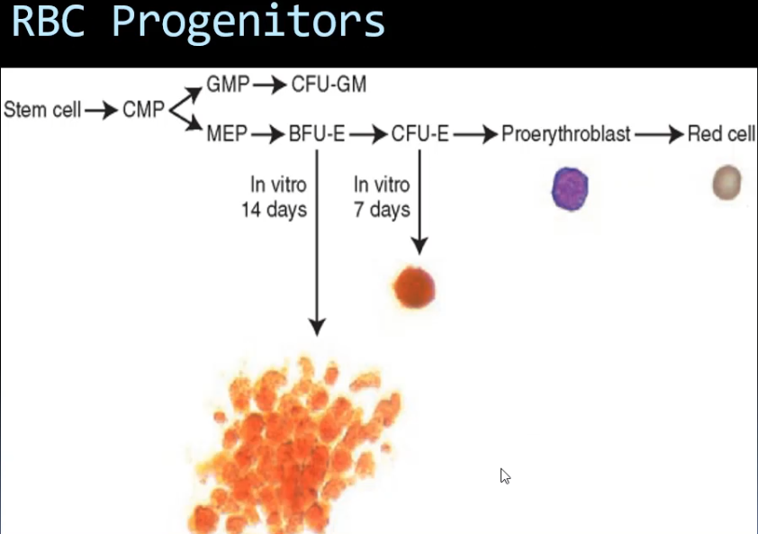
هرکدام از سلولهای خونی کار ویژهای دارند:
سلول مادر با تبدیلشدن به انواع سلولهای خونی، سلولهایی با کارکردهای متفاوت به وجود میآورد؛ برای مثال، یک سلول اکسیژنرسانی میکند، دیگری در انعقاد نقش دارد و سلول دیگری مانند سرباز بدن عمل میکند. نوتروفیل میتواند میکروبخواری کند. برای نمونه، میکروبی که در تصویر نشان داده شده یک دیپلوکوک عامل ذات الریه است.نوتروفیل ممکن است در تصویر دولوبه یا سهلوبه دیده شود، اما در بدن حرکت میکند و بهدنبال میکروب میرود، بهدنبال میکروب حرکت میکند میکروب را وارد سیتوپلاسم خود میکند و گرانولهایش را روی آن میریزد تا آن را از بین ببرد. بنابراین، سلولها ثابت و بیحرکت نیستند.
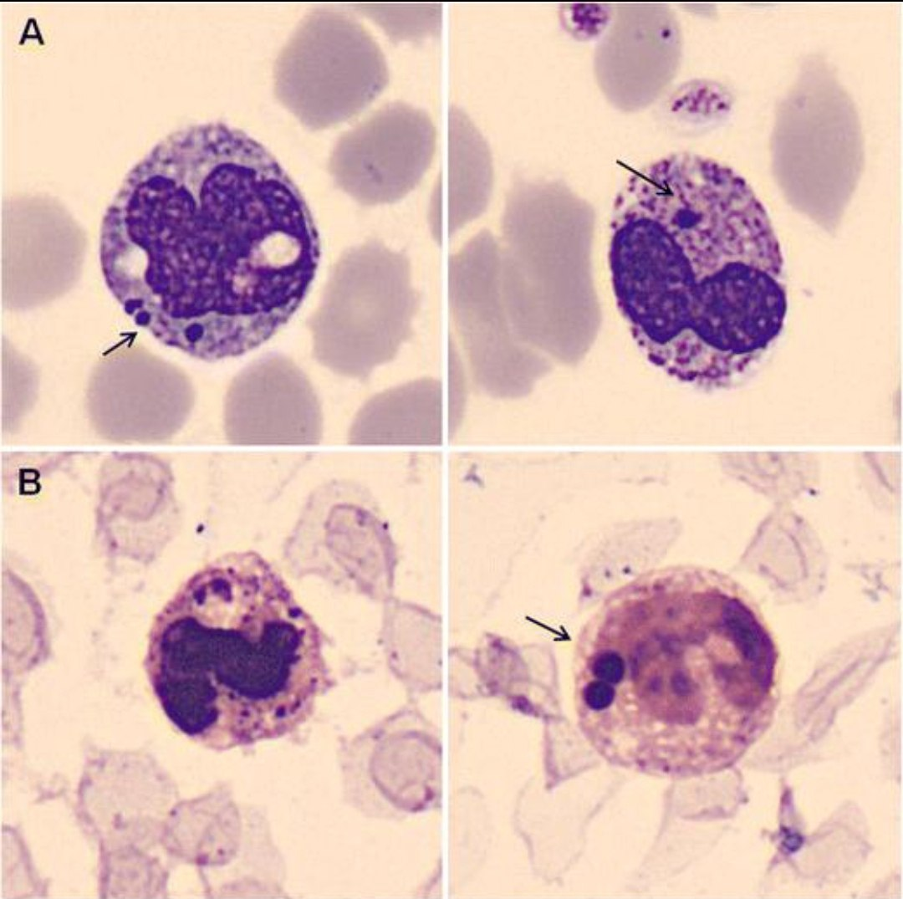
در مغز استخوان میلیاردها سلول وجود دارد؛ از جمله مگاکاریوسیتها، سلولهای گلبول قرمز در حال تکامل و گلبولهای سفید در حال تکامل. نکته مهم این است که در شرایط فیزیولوژیک و طبیعی، تنها سلول های بالغ میتوانند وارد خون شوند. برای مثال، گلبول قرمز در مغز استخوان هسته دارد ولی شکل باغ آن که بدون هسته است در خون مشاهده میشود.
سلولهایی به نام رتیکولار ادونتیشال سل (Reticular Adventitial Cells) روی مویرگهای مغز استخوان قرار دارند و آنها را میپوشانند. سلول بالغ به این سلول ها علامت میدهد که بالغ شده است، سلول رتیکولار خودش را بلند میکند و سلول بالغ وارد مویرگ مغز استخوان میشود. مویرگهای مغز استخوان آنقدر ظریفاند که وقتی سلول به آنها میرسد، آن را وارد خود میکنند تا به خون برسد. آرایش مغز استخوان بسیار ویژه است.
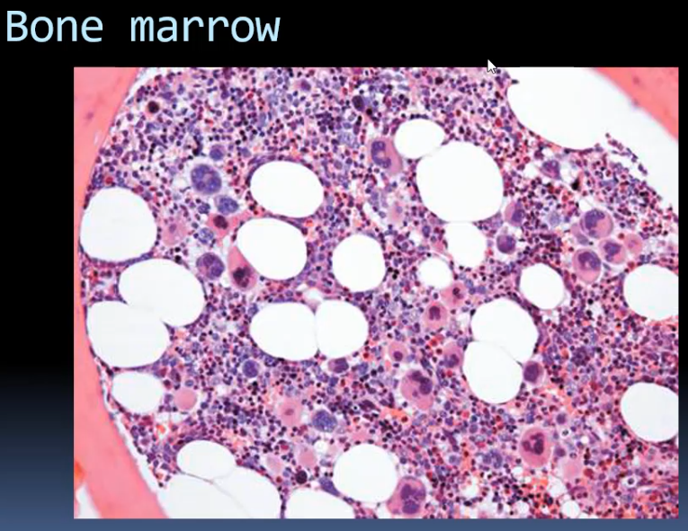
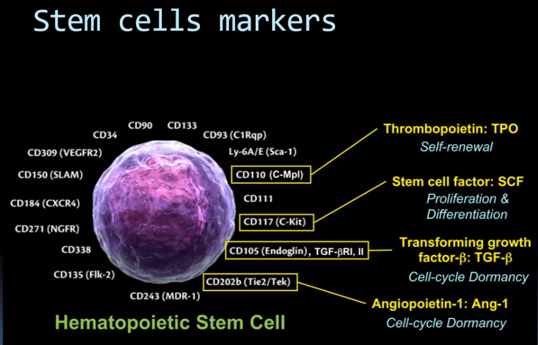
سلولهای مادر را با نشانههای سطحیشان شناسایی میکنند. این نشانهها پروتئینها و گلیکوپروتئینهای مختلفی هستند که بر سطح سلول مادر وجود دارند. برای نامگذاری گلیکوپروتئینها کمیتهای در نظر گرفته شده است و آنها را با اعداد و نامهایی مانند CD مشخص میکنند. برای نمونه، CD1 به یک گلیکوپروتئین خاص اشاره دارد. استفاده از نامهایی مانند CD کمک میکند نامگذاری گلیکوپروتئینها گیجکننده نشود.
یکی از نشانههای مهم سلول مادر CD34 است که در آزمایشگاه زیاد با آن کار میشود. نشانههای دیگر عبارتاند از c-Kit یا CD90، CD93، CD117 و CD133. بااینحال، نشانهای که بیشتر در آزمایشگاه به کار میرود CD34 است.
سلول مادر میتواند به سلولهای مختلف تبدیل شود. برای تبدیلشدن به گلبول قرمز، از سلولهای استرومال (stromal cells) مغز استخوان سیگنال دریافت میکند و از آنها کمک میگیرد. این سیگنالها میتوانند سلول مادر را به تولید گلبول قرمز یا پلاکت هدایت کنند. اینکه سلول مادر وارد کدام مسیر شود، به فاکتورهایی بستگی دارد که دریافت میکند.
تعدادی از سلولهای مادر مغز استخوان در حالت خواب هستند و به آنها سلولهای بنیادی خونساز بلندمدت (long-term hematopoietic stem cells) میگویند. مقدار خونی که در بدن داریم، بهوسیلهٔ تعداد محدودی سلول مادر تولید میشود.
سلول مادر در ابتدا توانایی رفتن به مسیرهای مختلف را دارد. پیداشدن CD38 نشانهٔ متعهدشدن آن به یک مسیر خاص است. اگر CD71 نیز روی سطح آن پیدا شود، نشانهٔ تعهد سلول به ساخت گلبول قرمز است. CD71 گیرندهٔ ترانسفرین (transferrin receptor) است. ترانسفرین پروتئینی است که در کبد ساخته میشود و آهن را در بدن حمل میکند؛ هر مولکول ترانسفرین میتواند دو اتم آهن سه ظرفیتی (Fe3+) را بهشکل دی فریک (یعنی دو اتم آهن سهظرفیتی) حمل کند. بنابراین، ظاهرشدن CD38 و CD71 نشان میدهد سلول مادر در مسیر تولید گلبول قرمز قرار گرفته است. سلولی که به آهن زیادی نیاز دارد، سلولی است که قرار است گلبول قرمز بسازد.
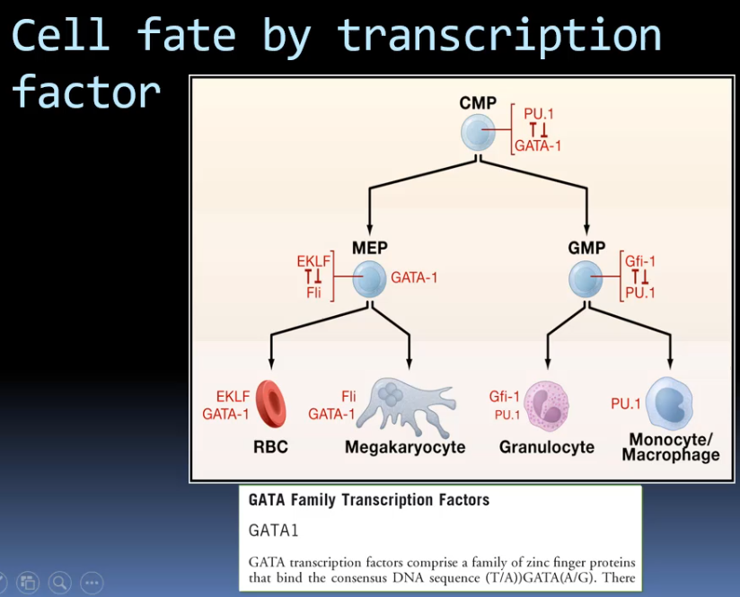
برای تبدیلشدن سلول مادر به گلبول قرمز، ژنهای لازم برای کارکردهای گلبول قرمز، از جمله ژنهای هموگلوبین و متابولیسم، باید آماده و فعال شوند. دو فاکتور مهم نسخهبرداری، EKLF و GATA-1، ژنهای لازم برای تولید گلبول قرمز را آماده میکنند و ژنهای هموگلوبین و متابولیسم گلبول قرمز را فعال میکنند. اگر این دو فاکتور نباشند، گلبول قرمز ساخته نمیشود.
فاکتور نسخهبرداری به بخشی از ژن میچسبد که برای فعالشدن ژن لازم است و پروموتر نام دارد. با اتصال فاکتور نسخهبرداری به پروموتر، ژن فعال میشود.
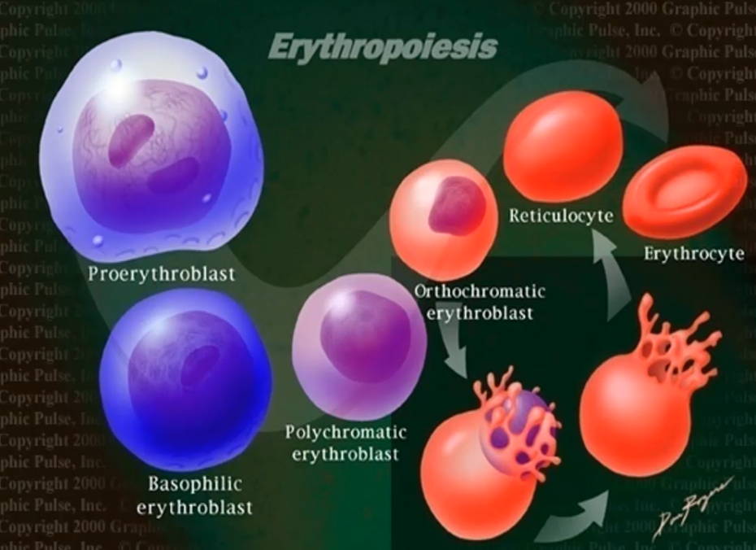
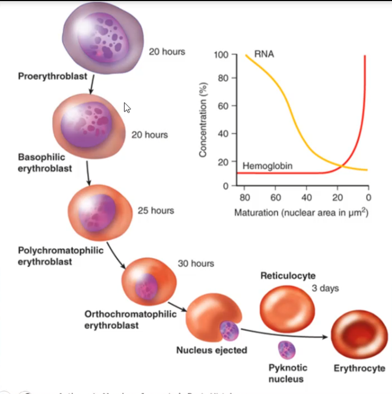
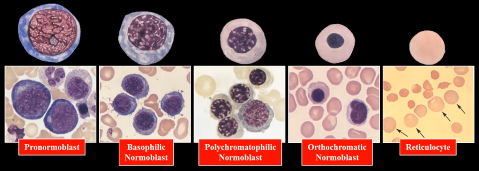
مراحل تکامل گلبول قرمز را در مغز استخوان بررسی میکنیم، چون تکامل این سلول در آنجا رخ میدهد. سلول نارس گلبول قرمز نباید وارد خون شود؛ بااینحال، در بعضی بیماران و در شرایط پاتولوژیک، سلول نارس وارد خون میشود.
سلولی که در مغز استخوان میتوان تشخیص داد و از روی آن میفهمیم مسیر تولید گلبول قرمز آغاز شده، پرونورموبلاست (pronormoblast) است. در بعضی منابع به آن پرواریتروبلاست (proerythroblast) هم میگویند، اما اصطلاح رایجتر نورموبلاست است(به جای اریتروبلاست). مسیر قابلشناسایی با میکروسکوپ نوری بهترتیب چنین است:
مراحل پیش از پرونورموبلاست هم وجود دارند، اما با میکروسکوپ نوری قابلشناسایی نیستند.
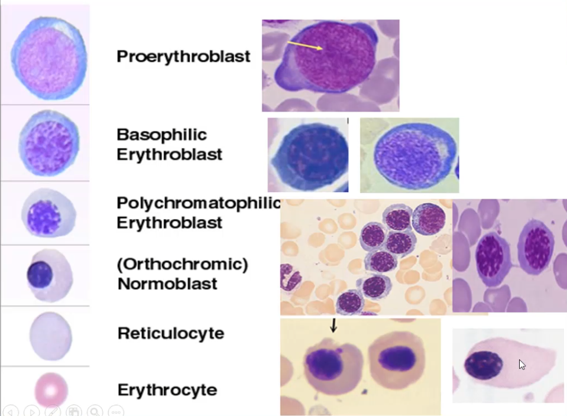
در مسیر تکامل، سلول هم میتوز میکند و هم بالغ میشود. از هر پرونورموبلاست حدود ۸ تا ۳۲ گلبول قرمز به وجود میآید و میانگین آن حدود ۱۶ گلبول قرمز است. پرونورموبلاست میتواند به دو پرونورموبلاست تبدیل شود؛ هر پرونورموبلاست به دو نورموبلاست بازوفیلیک و هر نورموبلاست بازوفیلیک به دو نورموبلاست پلیکروماتیک تبدیل میشود. نورموبلاست پلیکروماتیک هم یکیدو بار دیگر میتوز میکند. در مرحلهٔ ارتوکروماتیک میتوز متوقف میشود و سلول هستهاش را بیرون میاندازد.
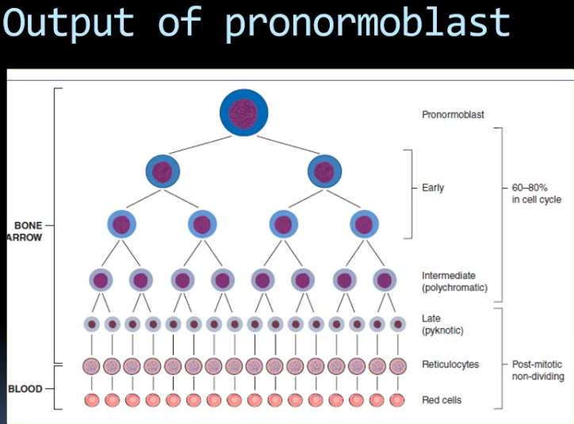
از مرحلهٔ پرونورموبلاست تا گلبول قرمز حدود پنج روز طول میکشد.
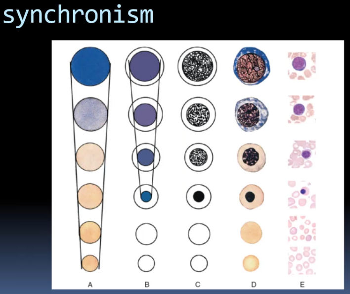
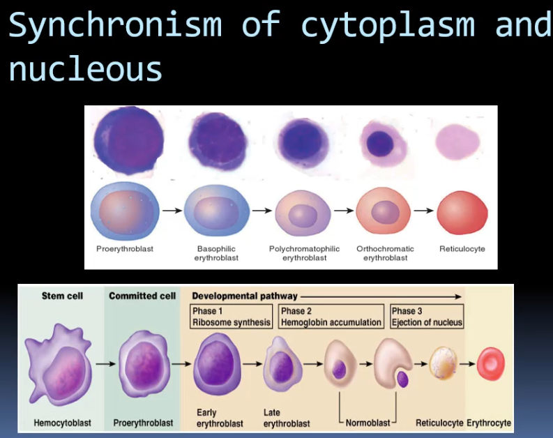
در طول تکامل، سیتوپلاسم ابتدا آبی است و بهتدریج قرمز میشود. قرمزی از مرحلهٔ پلیکروماتیک دیده میشود. در مرحلهٔ ارتوکروماتیک، سلول بهاندازهٔ گلبول قرمز، قرمز شده و هموگلوبین ساخته است. هسته نیز بهتدریج کوچکتر میشود تا در مرحلهٔ ارتوکروماتیک بیرون انداخته شود. در تصاویر مراحل تکامل، پرونورموبلاست، نورموبلاست بازوفیلیک، نورموبلاست پلیکروماتیک و نورموبلاست ارتوکروماتیک دیده میشوند؛ با کوچکشدن هسته و قرمزترشدن سیتوپلاسم، هسته بیرون انداخته میشود و سلول به گلبول قرمز تبدیل میشود.
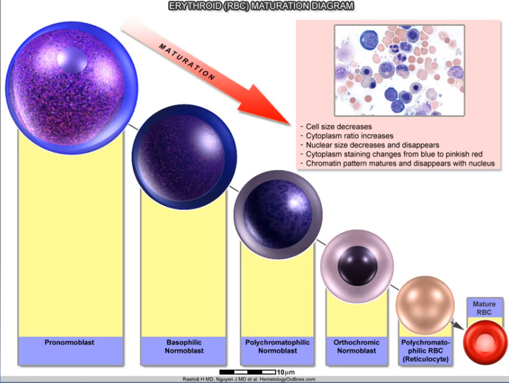
در تصویری دیگر، یک سلول مادر را در محیط کشت قرار دادهاند و انبوهی از گلبولهای قرمز به وجود آمده است. تعداد پیشسازهایی که واقعاً از یک سلول مادر حاصل میشوند مشخص نیست. تولید باید کنترل شود، چون سلول مادر ظرفیت تولید بسیار زیادی دارد و در مغز استخوان به سلولهای کنترلکننده نیاز است تا سلولهای مادر بیش از حد سلول تولید نکنند. بدون این کنترل، خونسازی میتوانست بسیار زیاد شود و منجر به اختلالاتی مثل خونریزی های مزمن یا پرخونی شود.
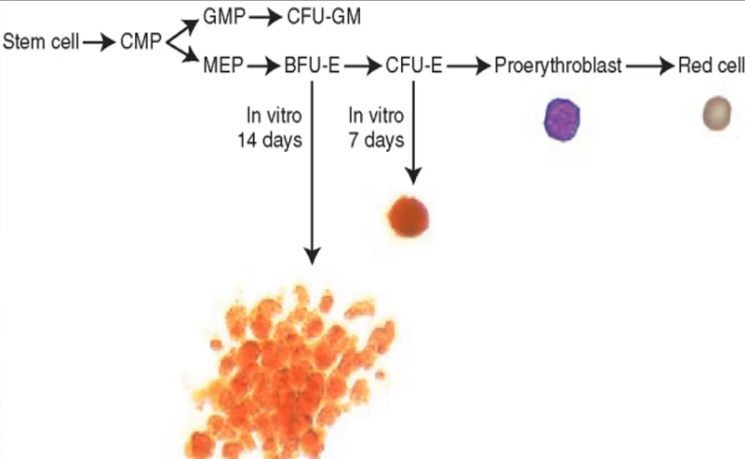
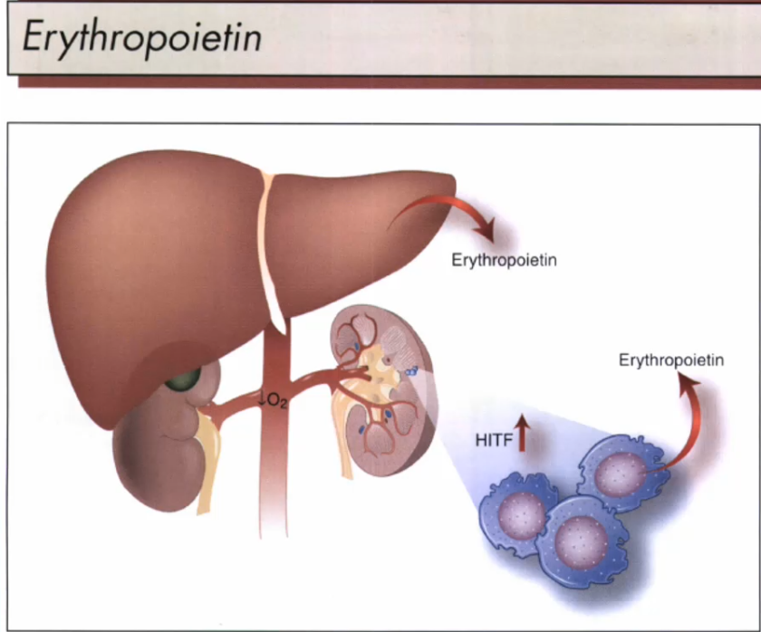
یکی از مهمترین هورمونهای لازم برای خونسازی اریتروپویتین (Erythropoietin or EPO) است. مقدار اندکی از اریتروپویتین از کبد و عمدهٔ آن از کلیه تولید میشود. در دوران جنینی اریتروپویتین از کبد ترشح میشود؛ پس از تولد، مرکز تولید آن از کبد به کلیه منتقل میشود.
کلیه مرکز حسکردن اکسیژن است. در خونریزی، مثلاً در تصادف، کلیه رگهای خود را تنگ میکند تا خون کمتری از آن عبور کند و خون به مغز و قلب برسد به همین خاطر کلیه را مرکز حس اکسیژن در بدن میشناسند و اریتروپویتین از آنجا ترشح میشود. اریتروپویتین در پاسخ به کمبود اکسیژن ترشح میشود و تولید گلبول قرمز را تحریک میکند. اریتروپویتین یک گلیکوپروتئین است و محل ژن آن روی کروموزوم شمارهٔ 7 ذکر شده است.
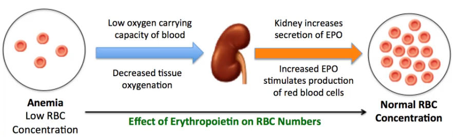
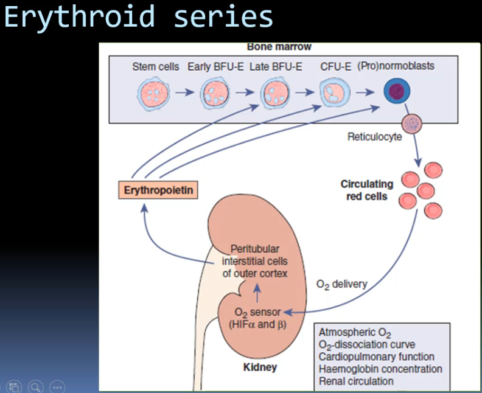
بیمارانی که نارسایی کلیه دارند ممکن است اریتروپویتین کافی ترشح نکنند؛ به آنها اریتروپویتین تزریقی میدهند تا وضعیتشان بهتر شود.
تولید گلبول قرمز فرایندی ظریف است. کبد پروتئینی به نام هپسیدین (hepcidin) میسازد که تنظیم آهن را بر عهده دارد.سلول های روده کانالهایی به نام فروپورتین (ferroportin) دارند که آهن از آنها عبور میکند و وارد خون میشود: آهن غذا وارد سلولهای گوارشی میشود و فروپورتین آن را به سمت خون میبرد. هپسیدین میتواند این کانالها را ببندد.
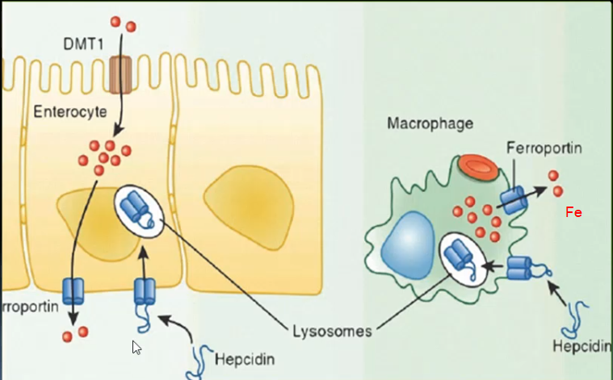
اگر هپسیدین اصلاً ترشح نشود، کانالها باز میمانند و آهن زیادی جذب میشود. آهن در کبد و قلب جمع میشود و برای بدن مشکل ایجاد میکند. گلبولهای قرمزی که در مغز استخوان ساخته میشوند به آهن نیاز دارند. در این تنظیم، گلبولهای قرمز باید به کبد پیامی بدهند تا سنتز هپسیدین کمتر شود؛ با کاهش سنتز هپسیدین، کانالها باز میشوند و آهن وارد بدن میشود، در واقع نوعی بازخورد و تنظیم از نوع فیدبک منفی رخ می دهد.
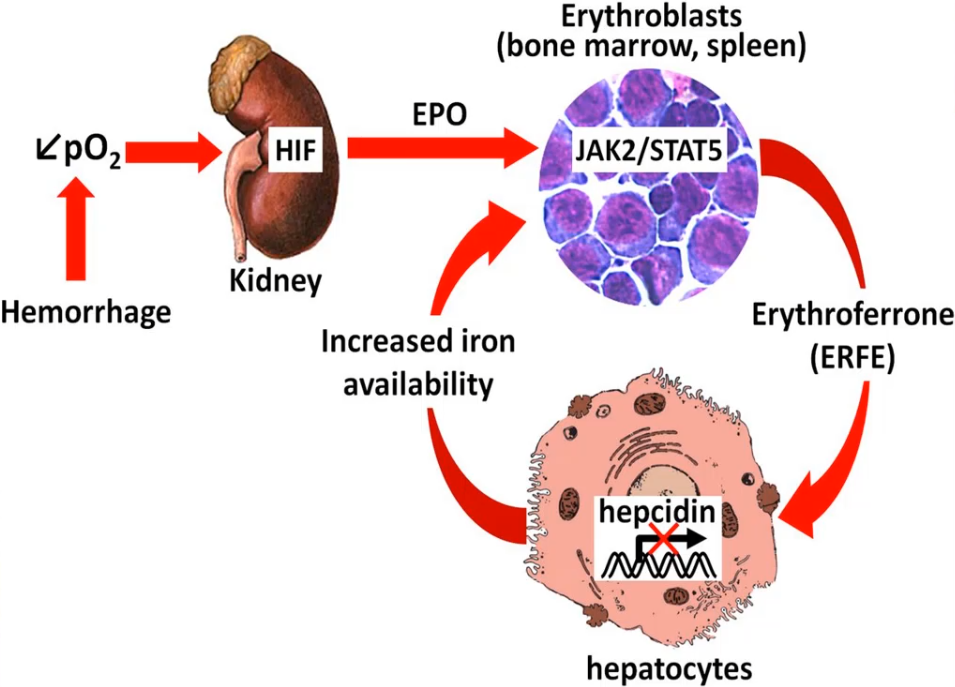

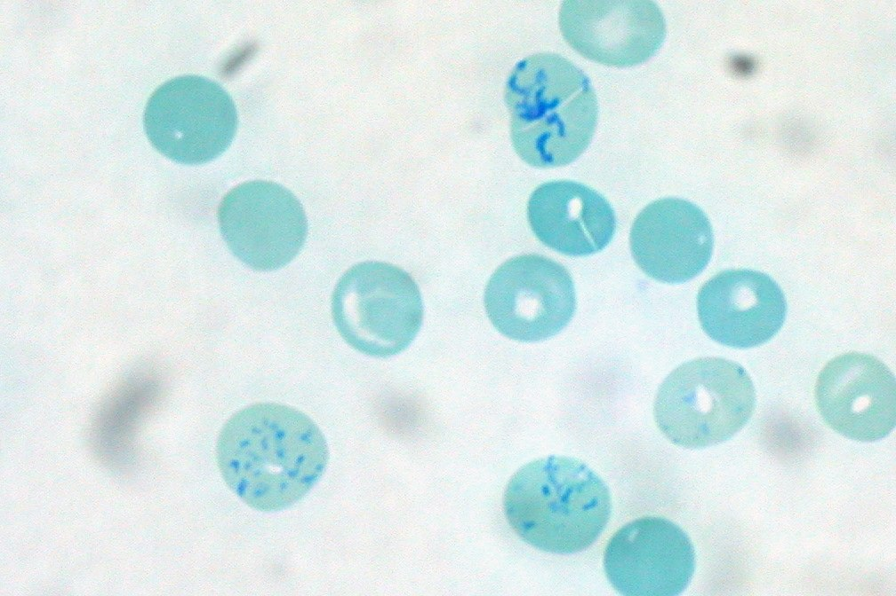
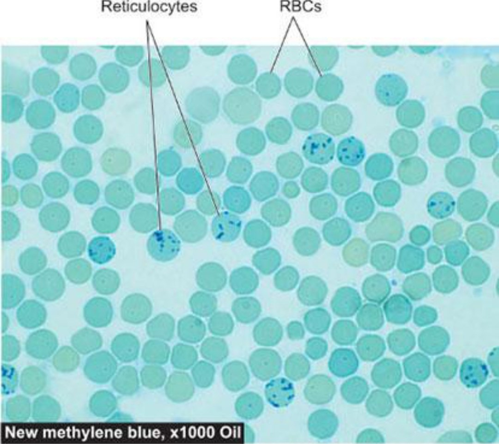
در مرحلهٔ ارتوکروماتیک، سلول هستهاش را بیرون میاندازد و گلبول قرمز جوان به وجود میآید. این سلول هنوز RNA و ریبوزوم دارد؛ بهدلیل رشتههای RNA به آن رتیکولوسیت میگویند و «رتی/ Reti» به رشتهها اشاره دارد. رتیکولوسیت جوانترین گلبول قرمزی است که هسته ندارد.
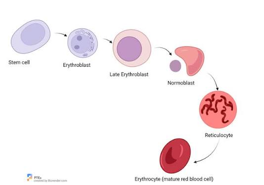
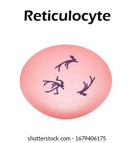
رتیکولوسیت کمی چروکیده است؛ پس از بیرونانداختن هسته، سیتوپلاسم هم چروکیده میشود. رتیکولوسیت ۴۸ ساعت در مغز استخوان میماند. در این مرحله حدود ۲۰ درصد هموگلوبین ساخته میشود.
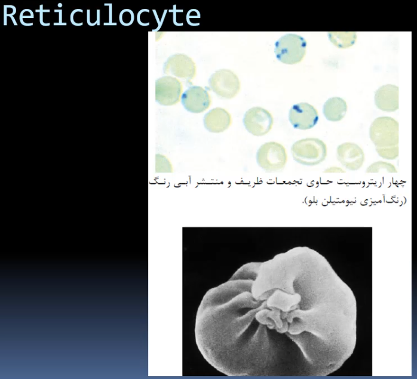
پس از ورود به خون، رتیکولوسیت حدود ۲۴ ساعت بعد رشتههای RNA و ریبوزوم خود را از دست میدهد، شکلش تغییر میکند (Remodeling) و به گلبول قرمز RBC دوطرففرورفته (biconcave) تبدیل میشود. عمر گلبول قرمز ۱۲۰ روز است.
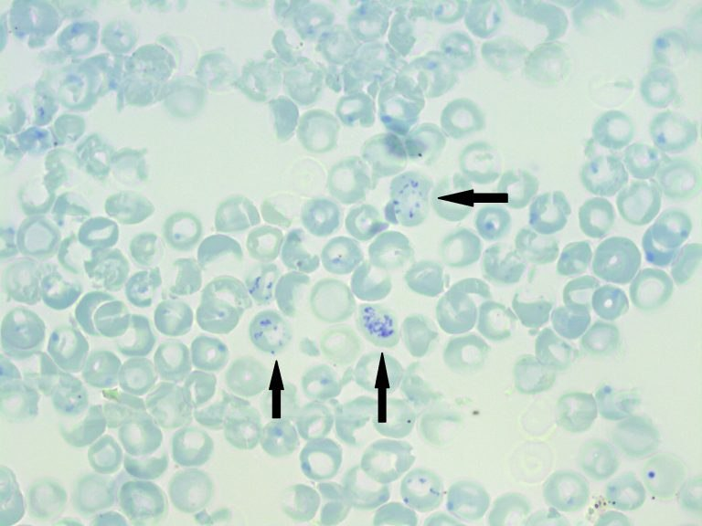
گلبولهای قرمز موجود در خون سنهای متفاوتی دارند؛ برای نمونه، ممکن است ۶۰، ۷۰، ۸۰، ۹۰ یا ۱۰۰ روزه باشند. گلبول قرمز بالغ نمیتواند نشان دهد که هنگام حضور در مغز استخوان آهن و ویتامین کافی داشته است یا نه؛ ممکن است ۶۰ روز پیش در مغز استخوان بوده باشد. اما رتیکولوسیت تازه از مغز استخوان بیرون آمده و اطلاعات تازهتری دربارهٔ وضعیت خونسازی در زمانی که در مغز استخوان بوده فراهم میکند. به همین دلیل شمارش رتیکولوسیت ارزش دارد.
ممکن است دارویی سلول مادر را نابود کند. برای مثال، قبلاً برای حصبه آنتیبیوتیکی به نام کلرامفنیکل (chloramphenicol) میدادند و ممکن بود فرد دچار کمخونی آپلاستیک (aplastic anemia) شود؛ دارو سلولهای مادر خونساز را نابود میکرد. ازبینرفتن سلول مادر میتواند به کمخونی و حتی فوت بیمار منجر شود. در بیماری که داروی خطرناکی مصرف میکند، با شمارش رتیکولوسیت میتوان وضعیت خونسازی مغز استخوان را پیگیری کرد؛ رتیکولوسیت تازه از مغز استخوان آمده و نشان میدهد سلول مادر کار میکرده است یا نه.
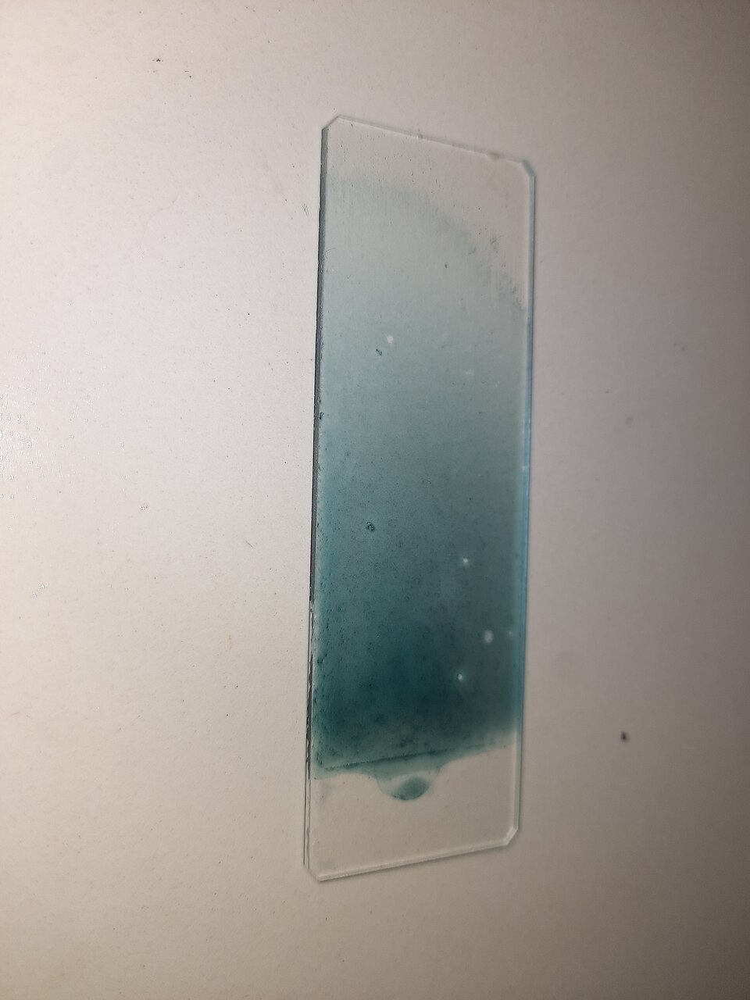
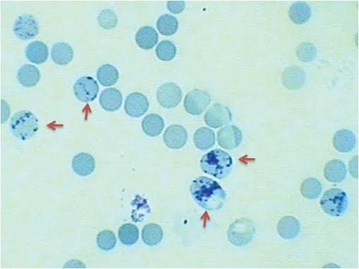
رتیکولوسیتها گلبولهایی هستند که رشتههای RNA دارند؛ گلبولهای قرمز بالغ رشتهٔ RNA ندارند. رنگ رایت برای دیدن رشتههای RNA مناسب نیست و آنها را رنگ نمیکند؛ بنابراین، رتیکولوسیتها به رنگآمیزی مخصوص نیاز دارند. برای رنگآمیزی رتیکولوسیت از رنگهای حیاتی (vital stains) استفاده میشود.
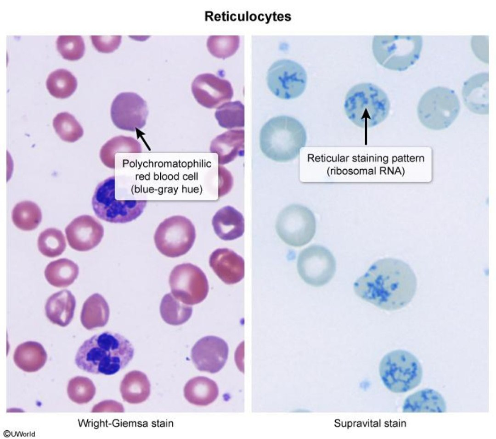
در رنگآمیزی معمول، خون را روی لام میکشند و میگذارند خشک شود؛ پس از خشکشدن، سلولها مردهاند و سلول مرده رنگآمیزی میشود. اما برای رنگآمیزی رتیکولوسیت، سلولها را در حالت زنده رنگ میکنند و به همین دلیل این روش را رنگآمیزی حیاتی (Vital Staining) میگویند. دو رنگ مورد استفاده عبارتاند از بریلیانت کریزیل بلو (Brilliant Cresyl Blue) و نیو متیلن بلو (New Methylene Blue). در دانشگاه و حین تحصیلات، رنگ بریلیانت کریزیل بلو رایج تر است. البته رنگ های دیگری مثل آرومین O و تیازول نارنجی هم در آنالیزور های آزمایشگاهی جهت شمارش رتیکولوسیت ها استفاده میشود ولی اصلی ها همان بریلیانت کریزیل بلو و نیو متیلن بلو هستند. در شکل زیر چهار پنل با این رنگ آمیزی ها برای شمارش رتیکولوسیت ها مشاهده میکنید:
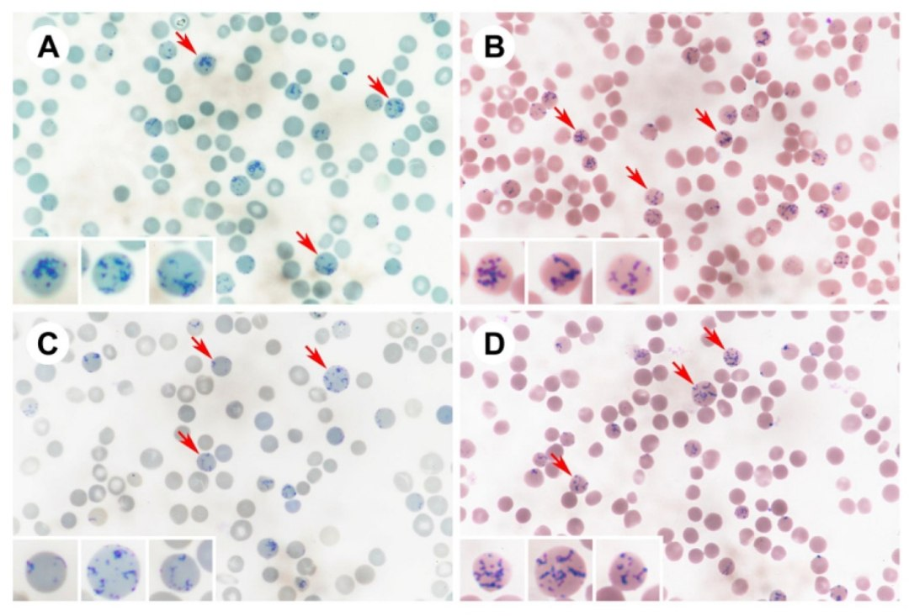
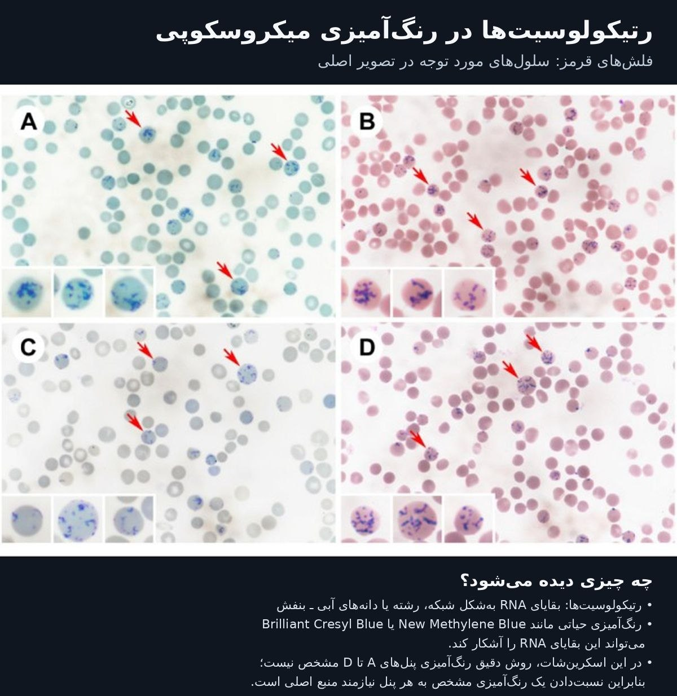
برای رنگآمیزی، دو قطره خون و دو قطره رنگ را در یک لولهٔ آزمایش میریزند؛ در آن لحظه سلولها زندهاند. بریلیانت کریزیل بلو وارد گلبول میشود و اگر رشتهٔ ihd RNA وجود داشته باشد، روی رشتهها مینشیند و آنها را ضخیم میکند تا رشتههای بسیار نازک RNA زیر میکروسکوپ قابل دیدن باشند.
در این روش از بریلیانت کریزیل بلو استفاده شده است. در لام، سلولهایی که رشته دارند رتیکولوسیتاند و سلولهایی که رشته ندارند گلبول قرمز بالغ؛ رشتهها همان RNA هستند. رتیکولوسیت را میتوان به غنچهٔ گلی تشبیه کرد که از مغز استخوان وارد خون میشود و بعد باز میشود؛ گلبول قرمز بالغ مانند گل بازشده است.
در آزمایشگاه رتیکولوسیتها را میشمارند و مشخص میکنند چند درصد گلبولهای قرمز را تشکیل میدهند. بهطور طبیعی، از هر ۱۰۰ گلبول قرمز حدود یک عدد رتیکولوسیت است؛ درصد طبیعی حدود ۱٪ و میانگین آن نیز ۱٪ است. محدودهٔ طبیعی رتیکولوسیت حدود نیم تا یکونیم درصد و میانگین آن ۱٪ است.
روزانه حدود ۱٪ از گلبولهای قرمز را از دست میدهیم و همان مقدار باید جایگزین شود. با اینکه ۱٪ عدد کمی به نظر میرسد، در هر میلیمتر مکعب خون حدود ۵ میلیون گلبول قرمز وجود دارد و ۱٪ آن ۵۰ هزار میشود؛ یعنی روزانه در هر میلیمتر مکعب خون حدود ۵۰ هزار گلبول قرمز از بین میرود و به همان تعداد جایگزین میشود. در کل خون، حدود ۳ میلیون رتیکولوسیت در هر ثانیه از مغز استخوان وارد خون میشود.
در بیماری که رتیکولوسیت زیادی دارد، میتوان ۱۰۰ گلبول قرمز شمرد و دید چندتای آنها رتیکولوسیت هستند. برای مثال، اگر از ۱۰۰ سلول حدود ۴۰ رتیکولوسیت باشد، مقدار رتیکولوسیت ۴۰٪ است. شمارش در آزمایشگاه دشوار است؛ برای آسانترکردن آن، وسیلهای به نام دیسک میلر (Miller disc) در عدسی چشمی میکروسکوپ قرار میگیرد که میدان را شطرنجی میکند. در جلسات آزمایشگاه با این وسیله آشنا میشوید.
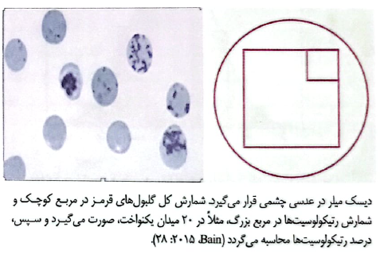
اگر شمارش رتیکولوسیت بیمار ۵٪ باشد، از حدود ۱٪ طبیعی بیشتر است. افزایش رتیکولوسیت میتواند نشان دهد گلبول قرمز در خون تکهتکه میشود، کوچک میشود یا از بین میرود؛ این وضعیت را کمخونی همولیتیک (hemolytic anemia) میگویند. در کمخونی همولیتیک، گلبولهای قرمز پیش از رسیدن به عمر ۱۲۰روزه از بین میروند؛ ماکروفاژ آنها را میخورد یا سلولها لیز میشوند. بیماریهایی مانند تالاسمی، اسفروسیتوز و فاویسم میتوانند با لیزشدن گلبول قرمز همراه باشند. افزایش رتیکولوسیت میتواند نشان دهد گلبول قرمز در خون در حال لیزشدن است(چون از بین رفتن گلبول های قرمز باعث افزایش درصد و نسبت رتیکولوسیت ها میشود). کمخونی ممکن است ارثی یا اکتسابی باشد.
اگر رتیکولوسیت بیمار 0.2٪ باشد، درحالیکه مقدار طبیعی حدود ۱٪ است، ممکن است مغز استخوان بهاندازهٔ کافی خونسازی نکند. باید احتمال وجود موارد زیر را در نظر گرفت:
اگر دارویی برای مغز استخوان خطرناک باشد، ممکن است از بیمار بخواهند هر دو روز آزمایش رتیکولوسیت بدهد؛ اگر مقدار طبیعی بماند، درمان را ادامه میدهند و اگر پایین بیاید، دارو را قطع میکنند.
شمارش رتیکولوسیت در ارزیابی و تشخیص کمخونی هم کمک میکند:
رتیکولوسیت شمارششده نشاندهندهٔ فعالیت مغز استخوان در روزهای قبل است: رتیکولوسیت پس از ساختهشدن حدود ۴۸ ساعت در مغز استخوان میماند، وارد خون میشود و حدود ۲۴ ساعت بعد رشتههای RNA را از دست میدهد و به گلبول قرمز بالغ تبدیل میشود.
اگر بیمار کمخونی داشته باشد، شمارش رتیکولوسیت بهتنهایی نمیگوید مغز استخوان در زمان حاضر چند برابر طبیعی کار میکند ثانیا، باید بدانیم که مغز استخوان در صورت تامین بودن مواد موردنیاز و آهن، حداکثر 6 تا 8 برابر حالت عادی میتواند خون سازی بکند و این مقدار نمی تواند مثلا رتیکولوسیت 10 درصد در بیمار را توجیه کند. مورد سوم اینکه اگر فرد در شرایط پاتولوژیک مثل انواع کم خونی قرار داشته باشید در اثر حضور فاکتورهایی مثل اریتروپویتین مدت زمان ماندگاری رتیکولوسیت ها در مغز استخوان کاهش مییابد تا سریع تر وارد خون شوند پس مقدار وجود رتیکولوسیت ها به تنهایی به طور مستقیم بیانگر فعالیت مغز استخوان نیست و نمی توان از روی آن نتیجه گرفت مغز استخوان به تنهایی چند برابر حالت طبیعی فعالیت میکند. پس برای این ارزیابی (میزان فعالیت مغز استخوان) از شاخص تولید رتیکولوسیت (reticulocyte production index; RPI) استفاده میشود. در محاسبهٔ RPI، درصد رتیکولوسیت بیمار را متناسب با کمخونی تصحیح میکنند و زمان بلوغ را هم در نظر میگیرند تا مقدار رتیکولوسیت تولیدشده به دست آید.
در محاسبه، درصد رتیکولوسیت بر اساس نسبت هماتوکریت بیمار (HCT) به هماتوکریت طبیعی تصحیح میشود و سپس بر زمان بلوغ تقسیم میشود.

در فرد سالم، هماتوکریت ۴۵٪ است و رتیکولوسیت یک روز طول میکشد تا بالغ شود. بهازای هر ۱۰٪ پایینآمدن هماتوکریت، نیمروز به زمان بلوغ اضافه میشود.
| هماتوکریت | زمان بلوغ رتیکولوسیت |
|---|---|
| ۴۵٪ | ۱ روز |
| ۳۵٪ | ۱٫۵ روز |
| ۲۵٪ | ۲ روز |
| ۱۵٪ | ۲٫۵ روز |
| ۵٪ | ۳ روز |
| سلول خونی | کارکرد بیانشده در درس |
|---|---|
| گلبول قرمز | اکسیژنرسانی و متابولیسم |
| پلاکت | کنترل خونریزی |
| نوتروفیل | مانند سرباز بدن عمل میکند و میتواند میکروبخواری کند |
| ائوزینوفیل | واکنشهای آلرژیک |
| مونوسیت | ارائهٔ آنتیژن |
| لنفوسیت | ساخت آنتیبادی |
| مگاکاریوسیت | تولید پلاکت |
| نشانه یا عامل | اطلاعات و نقش بیانشده |
|---|---|
| CD34 | نشانهٔ مهم سلول مادر و نشانهای که بیشتر در آزمایشگاه با آن کار میشود |
| c-Kit یا CD117، CD93، CD90، CD133 | از نشانههای دیگر سلول مادر |
| CD38 | نشانهٔ متعهدشدن سلول مادر به یک مسیر خاص |
| CD71 | گیرندهٔ ترانسفرین؛ پیداشدن آن نشانهٔ تعهد سلول به ساخت گلبول قرمز است |
| ترانسفرین | پروتئین ساختهشده در کبد که آهن را حمل میکند؛ هر مولکول آن دو اتم آهن فریک حمل میکند |
| KLF1 و GATA-1 | فاکتورهای نسخهبرداری که ژنهای لازم برای تولید گلبول قرمز، از جمله ژنهای هموگلوبین و متابولیسم، را آماده و فعال میکنند |
| پروموتر | بخشی از ژن که فاکتور نسخهبرداری به آن متصل میشود و این اتصال ژن را فعال میکند |
| ترتیب | مرحله | ویژگی بیانشده |
|---|---|---|
| ۱ | پرونورموبلاست (pronormoblast) | نخستین مرحلهای که در مغز استخوان با میکروسکوپ نوری قابلتشخیص است؛ میتوز میکند و بالغتر میشود |
| ۲ | نورموبلاست بازوفیلیک (basophilic normoblast) | از پرونورموبلاست به وجود میآید و میتوز میکند |
| ۳ | نورموبلاست پلیکروماتیک (polychromatic normoblast) | از مرحلهٔ بازوفیلیک به وجود میآید و هموگلوبین بیشتری میسازد |
| ۴ | نورموبلاست ارتوکروماتیک (orthochromatic normoblast) | میتوز متوقف میشود و سلول هستهاش را بیرون میاندازد |
| ۵ | رتیکولوسیت | پس از بیرونانداختن هسته شکل میگیرد، وارد خون میشود و سپس بالغ میشود |
| ویژگی | تغییر در مسیر تکامل |
|---|---|
| سیتوپلاسم | ابتدا آبی است و بهتدریج قرمز میشود؛ قرمزی از مرحلهٔ پلیکروماتیک دیده میشود |
| هموگلوبین | در مرحلهٔ پلیکروماتیک بیشتر ساخته میشود؛ در مرحلهٔ ارتوکروماتیک سلول بهاندازهٔ گلبول قرمز قرمز شده و هموگلوبین ساخته است |
| هسته | بهتدریج کوچکتر میشود و در مرحلهٔ ارتوکروماتیک بیرون انداخته میشود |
| میتوز | تا مراحل پیشین ادامه دارد و در مرحلهٔ ارتوکروماتیک متوقف میشود |
| مرحله یا بازه | تکثیر یا زمان بیانشده |
|---|---|
| از هر پرونورموبلاست | حدود ۸ تا ۳۲ گلبول قرمز؛ میانگین حدود ۱۶ |
| پرونورموبلاست | میتواند به دو پرونورموبلاست تبدیل شود |
| هر پرونورموبلاست | به دو نورموبلاست بازوفیلیک تبدیل میشود |
| هر نورموبلاست بازوفیلیک | به دو نورموبلاست پلیکروماتیک تبدیل میشود |
| نورموبلاست پلیکروماتیک | یکیدو بار دیگر میتوز میکند |
| مرحلهٔ ارتوکروماتیک | میتوز متوقف میشود و هسته بیرون انداخته میشود |
| از پرونورموبلاست تا گلبول قرمز | حدود پنج روز |
| عامل یا وضعیت | اثر یا اطلاعات بیانشده |
|---|---|
| اریتروپویتین (EPO) | در پاسخ به کمبود اکسیژن ترشح میشود و تولید گلبول قرمز را تحریک میکند؛ گلیکوپروتئین است |
| محل تولید اریتروپویتین | مقدار اندکی از کبد و عمده از کلیه |
| دوران جنینی / پس از تولد | در دوران جنینی از کبد ترشح میشود؛ پس از تولد مرکز تولید از کبد به کلیه منتقل میشود |
| نارسایی کلیه | ممکن است ترشح اریتروپویتین کافی نباشد؛ به بیمار اریتروپویتین میدهند تا وضعیتش بهتر شود |
| محل ژن اریتروپویتین | در گفتار کروموزوم شمارهٔ ۱ ذکر شده است؛ این مورد نیازمند بررسی است |
| هپسیدین | پروتئین ساختهشده در کبد که تنظیم آهن را بر عهده دارد و میتواند فروپورتینها را ببندد |
| فروپورتین | کانال رودهای که آهن را از سلولهای گوارشی به سمت خون میبرد |
| نبود هپسیدین | کانالها باز میمانند و آهن زیادی جذب میشود؛ آهن در کبد و قلب جمع میشود |
| کاهش سنتز هپسیدین | کانالها باز میشوند و آهن وارد بدن میشود |
| آهن | گلبولهای قرمز ساختهشده در مغز استخوان به آن نیاز دارند |
| مرحله یا سلول | زمان یا ویژگی بیانشده |
|---|---|
| رتیکولوسیت در مغز استخوان | ۴۸ ساعت میماند |
| رتیکولوسیت در خون | حدود ۲۴ ساعت بعد RNA و ریبوزوم را از دست میدهد و به گلبول قرمز بالغ تبدیل میشود |
| گلبول قرمز بالغ | شکل دوطرففرورفته (biconcave) دارد و عمر آن ۱۲۰ روز است |
| درصد طبیعی رتیکولوسیت | حدود ۱٪ |
| محدودهٔ طبیعی رتیکولوسیت | حدود ۰٫۵ تا ۱٫۵٪ |
| میانگین طبیعی | ۱٪ |
| تعداد گلبول قرمز در هر میلیمتر مکعب خون | حدود ۵ میلیون |
| یک درصد از این تعداد | حدود ۵۰ هزار |
| جایگزینی روزانه در هر میلیمتر مکعب | حدود ۵۰ هزار گلبول قرمز |
| ورود رتیکولوسیت از مغز استخوان به کل خون | حدود ۳ میلیون در هر ثانیه |
| وسیلهٔ کمک به شمارش | دیسک میلر (Miller disc)، قرارگرفته در عدسی چشمی و ایجادکنندهٔ میدان شطرنجی |
| روش یا رنگ | کاربرد یا ویژگی بیانشده |
|---|---|
| رنگ رایت | برای دیدن رشتههای RNA رتیکولوسیت مناسب نیست و آنها را رنگ نمیکند |
| رنگآمیزی حیاتی | سلولها را در حالت زنده رنگ میکنند |
| بریلیانت کریزیل بلو (brilliant cresyl blue) | یکی از رنگهای مورد استفاده برای رتیکولوسیت |
| نیو متیلن بلو (new methylene blue) | یکی از رنگهای مورد استفاده برای رتیکولوسیت |
| مخلوطکردن | دو قطره خون و دو قطره رنگ را در لولهٔ آزمایش میریزند؛ سلولها در آن لحظه زندهاند |
| رنگگرفتن | مخلوط را ۲۰ دقیقه میگذارند؛ رنگ وارد گلبول میشود و در صورت وجود RNA روی رشتهها مینشیند و آنها را ضخیم میکند |
| تهیهٔ اسمیر | یک قطره از مخلوط را روی لام میگذارند و اسمیر تهیه میکنند |
| مشاهده | پس از خشکشدن اسمیر، رتیکولوسیتها قابلمشاهدهاند |
| شمارش یا وضعیت | تفسیر بیانشده در درس |
|---|---|
| رتیکولوسیت ۵٪، در برابر حدود ۱٪ طبیعی | افزایش رتیکولوسیت؛ میتواند نشاندهندهٔ ازبینرفتن گلبولهای قرمز در خون باشد |
| کمخونی همولیتیک | گلبولهای قرمز پیش از عمر ۱۲۰روزه از بین میروند؛ ماکروفاژ آنها را میخورد یا سلولها لیز میشوند |
| تالاسمی، اسفروسیتوز و فاویسم | بیماریهایی که میتوانند با لیزشدن گلبول قرمز همراه باشند |
| کمخونی | ممکن است ارثی یا اکتسابی باشد |
| بیمار کمخون، RPI کمتر از ۲ | مغز استخوان خونسازی کافی نمیکند؛ ممکن است آهن یا ویتامین کافی نباشد یا مشکلی ارثی یا اکتسابی وجود داشته باشد |
| بیمار کمخون، RPI بیشتر از ۲٫۵ | مغز استخوان فعال است و کمخونی را جبران میکند، اما گلبولهای قرمز در خون از بین میروند؛ این وضعیت در کمخونی همولیتیک دیده میشود |
| هماتوکریت | زمان بلوغ رتیکولوسیت |
|---|---|
| ۴۵٪ | ۱ روز |
| ۳۵٪ | ۱٫۵ روز |
| ۲۵٪ | ۲ روز |
| ۱۵٪ | ۲٫۵ روز |
| ۵٪ | ۳ روز |
| مثال | دادههای بیانشده | نتیجهٔ بیانشده |
|---|---|---|
| ۱ | رتیکولوسیت ۲۰٪، هموگلوبین ۷، هماتوکریت حدود ۲۱٪، هماتوکریت طبیعی ۴۵٪، زمان بلوغ حدود دو روز یا کمی بیشتر | RPI حدود ۵؛ مغز استخوان حدود ۵ برابر طبیعی کار میکند، نه ۲۰ برابر |
| ۲ | رتیکولوسیت ۲٪، هموگلوبین ۱۰ گرم، هماتوکریت حدود ۳۰٪ | روش تصحیح بیان شده، اما محاسبهٔ عددی و نتیجه روشن نیست |
| ۳ | رتیکولوسیت ۱٪، هماتوکریت ۲۵٪، نسبت هماتوکریت حدود ۲۵/۴۵، زمان بلوغ حدود دو روز | RPI حدود ۰٫۲؛ مغز استخوان روزانه حدود ۰٫۲ برابر طبیعی کار میکند |
| پارامتر یا مقدار | معنای بیانشده |
|---|---|
| اکریدین اورنج (acridine orange) | رنگ فلورسانسی که به RNA میچسبد و آن را درخشان میکند؛ دستگاه از آن برای شمارش رتیکولوسیت استفاده میکند |
| رنگآمیزی حیاتی | امکان مشاهدهٔ رتیکولوسیت، اجسام هاینز (Heinz bodies) و هموگلوبین H (Hb H) را میدهد |
| رنگ رایت | برای مشاهدهٔ رتیکولوسیت، اجسام هاینز و هموگلوبین H مناسب نیست |
| MCH | برای گلبول قرمز بالغ به کار میرود؛ مقدار طبیعی حدود ۲۷ تا ۳۲ پیکوگرم است |
| Ret-He یا CHr | محتوای هموگلوبین رتیکولوسیت را نشان میدهد؛ میانگین هموگلوبین هر رتیکولوسیت را برحسب پیکوگرم بیان میکند |
| Ret-He کمتر از ۲۷ پیکوگرم | میتواند نشانهٔ فقر آهن باشد |
| رتیکولوسیت با ۲۰ پیکوگرم در برابر گلبولهای قبلی با حدود ۳۰ پیکوگرم | ممکن است نشان دهد آهن کافی نبوده و سلول کمرنگ شده است |
| Ret-He از ۲۴ به ۲۹ پیکوگرم پس از دریافت آهن | نمونهای از بهبود مقدار و پاسخ بیمار به آهن |
| عامل یا وضعیت | اثر بیانشده بر جذب آهن |
|---|---|
| چای | مانع جذب آهن میشود |
| فیتات و فسفات | میتوانند جذب آهن را کم کنند |
| شیر | میتواند جذب آهن را کاهش دهد؛ توصیه میشود همراه آهن داده نشود یا با فاصله داده شود |
| خمیر نان با فرصت کافی برای ورآمدن | فیتات کاهش پیدا میکند |
| خمیری که زود آماده شود و فرصت کافی برای ورآمدن نداشته باشد | فیتات باقی میماند و از جذب آهن جلوگیری میکند |
مسیر قابلشناسایی تکامل گلبول قرمز را بهترتیب نام ببرید و برای هر مرحله ویژگی مطرحشده در درس را بیان کنید.
پرونورموبلاست میتوز میکند و بالغتر میشود؛ سپس نورموبلاست بازوفیلیک به وجود میآید و میتوز میکند؛ نورموبلاست پلیکروماتیک شکل میگیرد و هموگلوبین بیشتری میسازد؛ در نورموبلاست ارتوکروماتیک میتوز متوقف میشود و هسته بیرون انداخته میشود؛ سپس رتیکولوسیت شکل میگیرد، وارد خون میشود و به گلبول قرمز بالغ تبدیل میشود.
توضیح دهید چرا شمارش رتیکولوسیت میتواند اطلاعات تازهتری از وضعیت خونسازی مغز استخوان فراهم کند و این شمارش چگونه در پیگیری مصرف داروی خطرناک کمک میکند.
رتیکولوسیت تازه از مغز استخوان وارد خون شده است و وضعیت خونسازی در زمان حضور در مغز استخوان را تازهتر نشان میدهد؛ گلبول قرمز بالغ ممکن است مدت زیادی در خون بوده باشد. هنگام مصرف دارویی که ممکن است سلول مادر را نابود کند، شمارش رتیکولوسیت برای پیگیری کارکرد خونسازی به کار میرود.
RPI چگونه محاسبه میشود و زمان بلوغ رتیکولوسیت بر اساس هماتوکریت چه تغییری میکند؟
درصد رتیکولوسیت بیمار را بر اساس نسبت هماتوکریت بیمار به هماتوکریت طبیعی تصحیح میکنند و سپس بر زمان بلوغ تقسیم میکنند. در هماتوکریت ۴۵٪ زمان بلوغ یک روز است و بهازای هر ۱۰٪ کاهش هماتوکریت، نیمروز به زمان بلوغ افزوده میشود.
رتیکولوسیت چگونه با رنگآمیزی حیاتی و بریلیانت کریزیل بلو شناسایی میشود؟
دو قطره خون و دو قطره رنگ را در لولهٔ آزمایش مخلوط میکنند و ۲۰ دقیقه میگذارند تا رنگ بگیرد. بریلیانت کریزیل بلو روی رشتههای RNA مینشیند و آنها را ضخیم میکند. سپس از مخلوط اسمیر تهیه میکنند؛ پس از خشکشدن، سلول دارای رشته رتیکولوسیت است و سلول بدون رشته گلبول قرمز بالغ است.
Ret-He یا CHr چه چیزی را اندازه میگیرد و چگونه میتواند دربارهٔ وضعیت آهن هنگام خونسازی اطلاعات بدهد؟
Ret-He یا CHr محتوای هموگلوبین رتیکولوسیت را نشان میدهد؛ یعنی بهطور متوسط هر رتیکولوسیت چند پیکوگرم هموگلوبین دارد. چون رتیکولوسیت تازه از مغز استخوان آمده است، مقدار آن میتواند نشان دهد هنگام خونسازی آهن کافی بوده است یا نه. Ret-He کمتر از ۲۷ پیکوگرم میتواند نشانهٔ فقر آهن باشد.
کدام گزینه بهترین توصیف از CD71 در مسیر تولید گلبول قرمز است؟
CD71 گیرندهٔ ترانسفرین است و پیداشدن آن نشانهٔ تعهد سلول به ساخت گلبول قرمز است.
در کدام مرحله از تکامل گلبول قرمز میتوز متوقف میشود و هسته بیرون انداخته میشود؟
در مرحلهٔ نورموبلاست ارتوکروماتیک میتوز متوقف میشود و سلول هستهاش را بیرون میاندازد.
کدام گزینه دربارهٔ بلوغ رتیکولوسیت درست است؟
رتیکولوسیت ۴۸ ساعت در مغز استخوان میماند و حدود ۲۴ ساعت پس از ورود به خون RNA و ریبوزوم خود را از دست میدهد.
در رنگآمیزی با بریلیانت کریزیل بلو، کدام سلول رتیکولوسیت شناخته میشود؟
بریلیانت کریزیل بلو روی رشتههای RNA مینشیند؛ سلول دارای رشته رتیکولوسیت است.
محدودهٔ طبیعی رتیکولوسیت که در درس بیان شده کدام است؟
محدودهٔ طبیعی رتیکولوسیت حدود نیم تا یکونیم درصد و میانگین آن ۱٪ است.
اگر بیمار کمخون باشد، RPI کمتر از ۲ طبق درس چه برداشتی را مطرح میکند؟
در بیمار کمخون، RPI کمتر از ۲ با خونسازی ناکافی مغز استخوان همراه دانسته شده است.
در هماتوکریت ۲۵٪، زمان بلوغ رتیکولوسیت در جدول درس چقدر است؟
در جدول، زمان بلوغ در هماتوکریت ۲۵٪ برابر ۲ روز است.
کدام گزینه اثر هپسیدین و فروپورتین را مطابق درس بیان میکند؟
هپسیدین میتواند کانالهای فروپورتین را ببندد؛ فروپورتین آهن را از سلولهای گوارشی به سمت خون میبرد.
Ret-He یا CHr در درس به چه معناست؟
Ret-He یا CHr محتوای هموگلوبین رتیکولوسیت را نشان میدهد؛ یعنی بهطور متوسط هر رتیکولوسیت چند پیکوگرم هموگلوبین دارد.
کدام مورد طبق درس میتواند جذب آهن را کاهش دهد؟
چای مانع جذب آهن میشود؛ فیتات، فسفات و شیر نیز میتوانند جذب آهن را کاهش دهند.
در خون شناسی قاعده ای وجود دارد به نام قانون سه (Rule of three) که رابطه تقریبی آن چنین است:
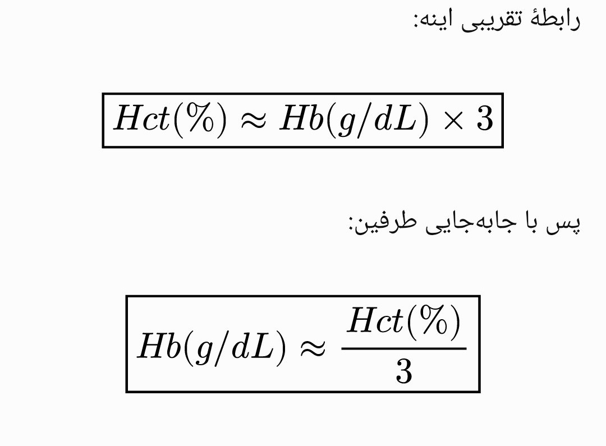
این رابطه از کجا اومده؟ این نسبت یک قاعده تجربی و تقریبی هست نه یک رابطه مطلق؛ یعنی معمولا در یک نمونه خون طبیعی(به شرط عدم وجود کم خونی ها و شرایط پاتولوژیک) میزان هماتوکریت (HCT) حدود 3 برابر عدد هموگلوبین (Hb) است. این رابطه فقط در شرایط پایدار و طبیعی برقرار است و فقط زمانی استفاده می کنیم که مقدار دقیق HCT گذارش نشده باشد، درصورتی که مقدار هماتوکریت گزارش شده باشد نیازی به استفاده از این قاعده نیست.
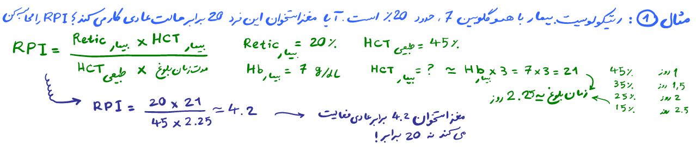
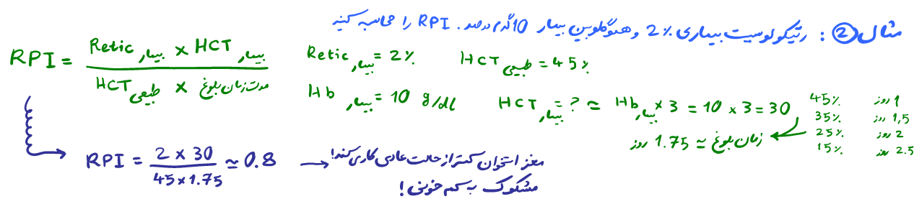
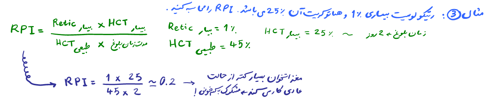
رتیکولوسیت ۲۰٪ و هموگلوبین ۷: هماتوکریت بیمار حدود ۲۱٪ و هماتوکریت طبیعی ۴۵٪ در نظر گرفته شد. زمان بلوغ در این هماتوکریت حدود دو روز یا کمی بیشتر است. پس از تصحیح رتیکولوسیت برای هماتوکریت و زمان بلوغ، RPI حدود ۵ به دست میآید؛ بنابراین، مغز استخوان حدود ۵ برابر طبیعی کار میکند، نه ۲۰ برابر. عدد ۲۰٪ مربوط به درصد رتیکولوسیتی است که از روزهای قبل وارد چرخه شده است.
رتیکولوسیت ۲٪ و هموگلوبین ۱۰ گرم: هماتوکریت بیمار حدود ۳۰٪ در نظر گرفته میشود. درصد رتیکولوسیت را نسبت به هماتوکریت طبیعی ۴۵٪ تصحیح میکنند و بر زمان بلوغ تقسیم میکنند تا RPI به دست آید، اما محاسبهٔ عددی این مثال تا پایان روشن نیست.
رتیکولوسیت ۱٪ و هماتوکریت ۲۵٪: نسبت هماتوکریت بیمار به هماتوکریت طبیعی حدود ۲۵/۴۵ است و زمان بلوغ در هماتوکریت ۲۵٪ حدود دو روز در نظر گرفته میشود. RPI حدود ۰٫۲ به دست میآید؛ یعنی مغز استخوان بیمار روزانه حدود ۰٫۲ برابر طبیعی کار میکند.
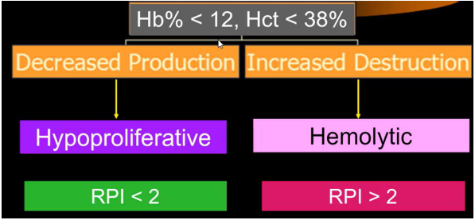
آنالایزرهای خونشناسی نیز میتوانند رتیکولوسیتها را بشمارند. دستگاه از رنگ فلورسانسی اکریدین اورنج (acridine orange) استفاده میکند که به RNA میچسبد و آن را درخشان میکند. پس از افزودن رنگ به خون، رشتههای RNA رتیکولوسیتها خاصیت فلورسانس پیدا میکنند و دستگاه آنها را میشمارد.
در آزمایشگاه میتوان رنگآمیزی انجام داد و گاهی این روش دقیقتر است. با رنگآمیزی رتیکولوسیت میتوان اجسام هاینز (Heinz bodies) و هموگلوبین H (Hb H) را هم دید. رنگ رایت برای مشاهدهٔ رتیکولوسیت، اجسام هاینز و هموگلوبین H مناسب نیست، اما با رنگآمیزی حیاتی میتوان آنها را مشاهده کرد.
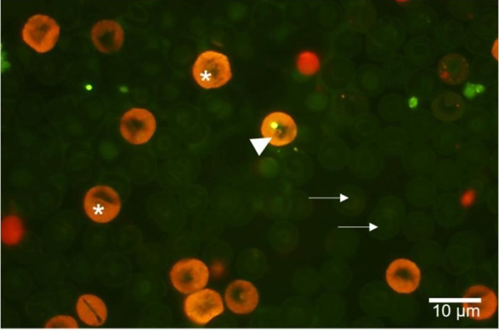
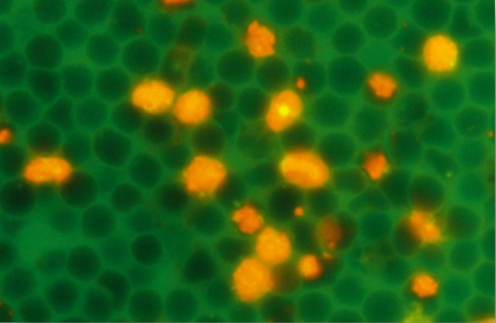
دستگاههای خونشناسی محتوای هموگلوبین رتیکولوسیت را هم اندازه میگیرند. برای گلبول قرمز بالغ از MCH استفاده میشود؛ برای رتیکولوسیت، Ret-He یا CHR مطرح است. Ret-He یعنی میزان یا محتوای هموگلوبین رتیکولوسیتها؛ یعنی بهطور متوسط هر رتیکولوسیت چند پیکوگرم هموگلوبین دارد.
مقدار MCH طبیعی گلبول قرمز بالغ حدود ۲۷ تا ۳۲ پیکوگرم است. اگر رتیکولوسیت تازه وارد خون شده و در مغز استخوان ۲۰ پیکوگرم هموگلوبین گرفته باشد، درحالیکه گلبولهای قبلی حدود ۳۰ پیکوگرم داشتهاند، ممکن است آهن کافی نبوده و سلول کمرنگ شده باشد. Ret-He کمتر از ۲۷ پیکوگرم میتواند نشانهٔ فقر آهن باشد؛ رتیکولوسیت نشان میدهد هنگام خونسازی در مغز استخوان آهن کافی بوده است یا نه.
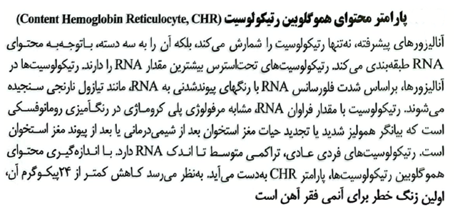
برای مثال، اگر رتیکولوسیت بیمار ۲۴ پیکوگرم هموگلوبین داشته باشد و پس از دریافت آهن مقدار آن به ۲۹ پیکوگرم برسد، وضعیت بهتر شده است و بیمار به آهن پاسخ میدهد. این پارامتر Ret-He نام دارد؛ در برخی آنالایزرها CHr نوشته میشود که به معنی محتوای هموگلوبین رتیکولوسیت (reticulocyte hemoglobin content) است و همان Ret-He است.
آهن شایعترین علت کمخونی در دنیاست. آهن در دسترس است، اما بعضی مواد همراه غذا میتوانند جذب آن را کاهش دهند:
به همین دلیل به افرادی که آهن بدنشان کم است میگویند بعد از غذا چای نخورند. هنگام تهیهٔ خمیر نان، اگر آرد و آب مخلوط شوند و خمیر فرصت کافی برای ورآمدن داشته باشد، فیتات کاهش پیدا میکند؛ اما اگر خمیر زود آماده شود و فرصت کافی برای ورآمدن نداشته باشد، فیتات باقی میماند و از جذب آهن جلوگیری میکند.
ادیتور: نیما قاسمی (ن.ق.شبزندهدار)
منابع استفادهشده:
صوت درس
منابع و مراجع (References)
الف) کتابهای مرجع انگلیسی
Keohane EM, Otto CN, Walenga JM. Rodak’s Hematology: Clinical Principles and Applications. Elsevier.
Hoffbrand AV, Steensma DP. Hoffbrand’s Essential Haematology. Wiley-Blackwell.
Kaushansky K, Lichtman MA, Prchal JT, et al. Williams Hematology. McGraw Hill.
Bain BJ, Bates I, Laffan MA. Dacie and Lewis Practical Haematology. Elsevier.
McKenzie SB, Williams JL. Clinical Laboratory Hematology. Pearson.
ب) اطلسها و منابع تصویری
Clinical Hematology Atlas. Elsevier.
American Society of Hematology (ASH). ASH Image Bank. Available at: https://imagebank.hematology.org/
University of Alberta. A Laboratory Guide to Clinical Hematology. Available at: https://pressbooks.openeducationalberta.ca/mlsci/
Histology Guide. Available at: https://histologyguide.com/
The Blood Project. Available at: https://www.thebloodproject.com/
ج) منابع علمی آنلاین
National Center for Biotechnology Information (NCBI). StatPearls: Histology, Reticulocytes. Available at: https://www.ncbi.nlm.nih.gov/books/NBK542172/
National Center for Biotechnology Information (NCBI). Clinical Methods: Reticulocytes. Available at: https://www.ncbi.nlm.nih.gov/books/NBK264/
د) مقالات پژوهشی مرتبط
Shokrgozar N, Golafshan HA. Molecular perspective of iron uptake, related diseases, and treatments. Blood Research. 2019. Available at: https://pmc.ncbi.nlm.nih.gov/articles/PMC6439303/
Golafshan HA, et al. Evaluation of Red Cell Membrane Cytoskeletal Disorders Using a Flow Cytometric Method in South Iran. Turkish Journal of Haematology. 2014. Available at: https://pmc.ncbi.nlm.nih.gov/articles/PMC3996639/
هـ) منابع فارسی
گلافشان، حبیبالله و همکاران. اصول و روشهای آزمایشگاهی در بانک خون (ایمونوهماتولوژی). انتشارات دانشگاه علوم پزشکی شیراز.
گلافشان، حبیبالله و همکاران. روش های آزمایشگاهی در هماتولوژی. انتشارات دانشگاه علوم پزشکی شیراز
برآورد تقریبی تکمیل محتوا: حدود ۹۵٪